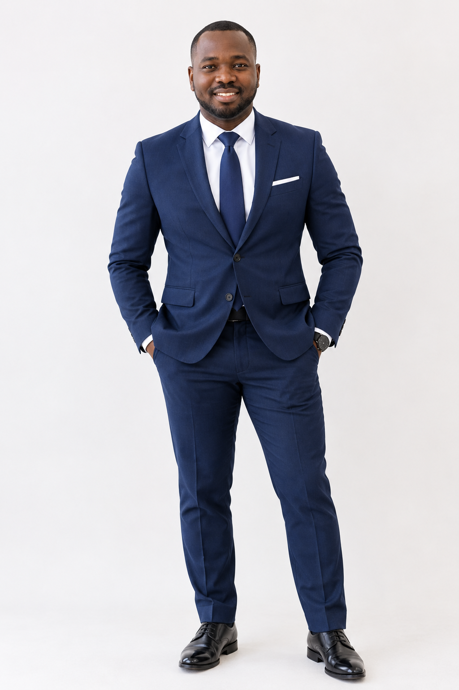

Computer Vision
Image classification, object recognition and visual understanding.
I am Olivier Agoua, a computer science and applied mathematics graduate developing practical solutions in Machine Learning and Computer Vision, with a strong interest in research and autonomous intelligent systems.

My academic path combines Applied Mathematics and Computer Science with a Master's in Informatics and Computer Technology. This background gives me a strong interest in the mathematical and computational foundations behind machine learning.
I am particularly interested in Computer Vision: transforming images and video into meaningful information through classification, recognition and intelligent decision-making systems.
My portfolio focuses on projects where the complete workflow matters — from data preparation and model development to evaluation and practical deployment.
Areas that connect my current technical work with future research in AI and autonomous systems.
Image classification, object recognition and visual understanding.
Model development, evaluation and learning from structured and visual data.
Exploring neural approaches for increasingly complex visual tasks.
Interest in AI systems that perceive their environment and support intelligent decisions.
Projects are presented as evidence of practical learning: problem definition, data, model, evaluation and deployment.
A computer vision project focused on classifying images into Stop and Non-Stop categories. The workflow applies image preparation, machine-learning concepts and model evaluation to a concrete visual recognition problem.
Open live test ↗A computer vision project designed for practical testing of vehicle recognition. The model will be exposed through a Streamlit Cloud application so the recognition workflow can be tested with real inputs.
Open live test ↗Practical training focused on applying and implementing machine-learning models in Python, strengthening the bridge between theory, code and model evaluation.
Samara State Technical University · Russia
Samara State Technical University · Russia
Python · SQL · R · Git
Machine Learning · Deep Learning fundamentals · Model Training · Model Evaluation
Image Classification · Image Processing · Visual Recognition
Flask · FastAPI · Streamlit
I welcome conversations with PhD supervisors, research groups and organizations working on AI, Machine Learning and Computer Vision.